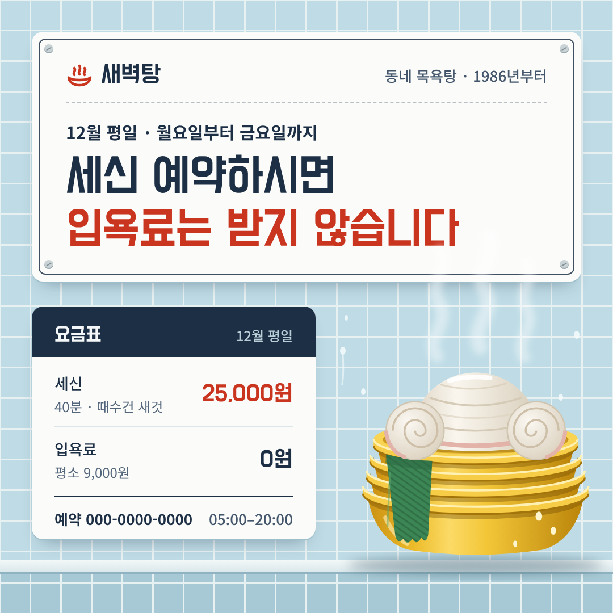
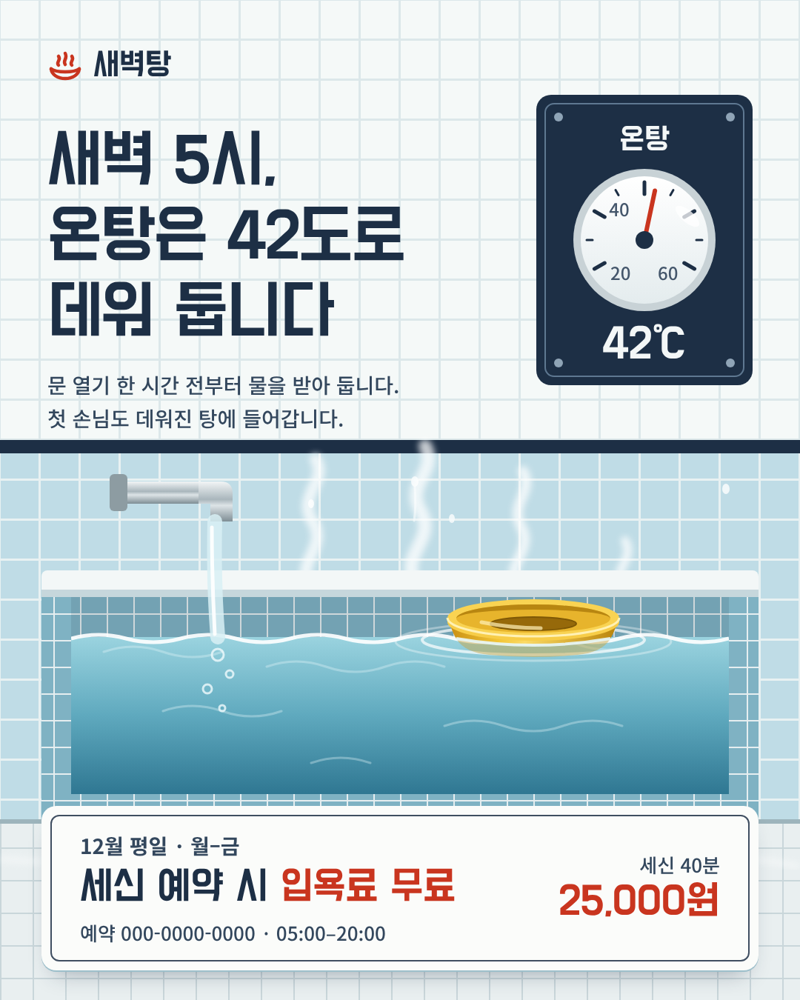
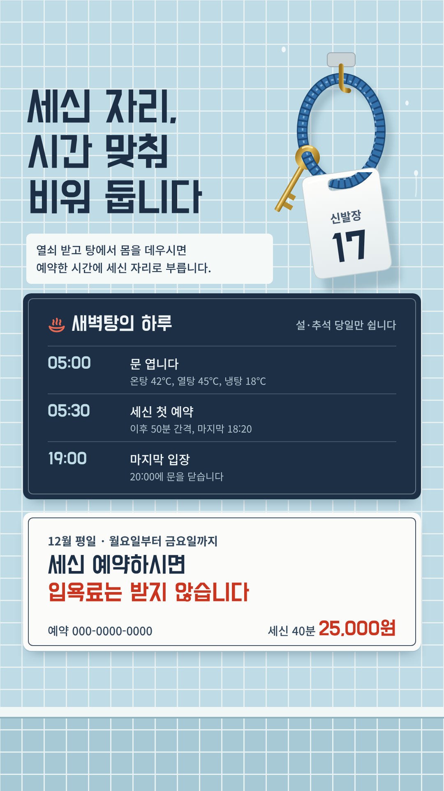

SNS 광고 이미지 · SD-SN64
새벽탕
새벽 5시에 문을 여는 동네 대중목욕탕의 12월 평일 광고. 세신을 전화로 예약하면
입욕료를 받지 않고
, 세신은 40분 25,000원
한국어 · 원화
목욕탕 타일 하늘색 · 남색 · 온천 표시 빨강
피드 1:1 · 세로 4:5 · 스토리 9:16
이 디자인으로 상담하기

피드
1080 × 1080

세로형
1080 × 1350

스토리
1080 × 1920
우리 가게도 이런 광고 이미지가 필요하다면
이 디자인으로 상담하기